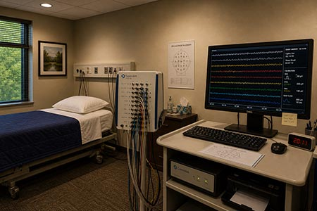

Research Studies

Somnatek Sleep Health Center served as a clinical partner site for sleep research conducted in collaboration with the Wexler University Department of Cognitive and Behavioral Neuroscience from 2008 through 2013.
All study activities concluded per protocol. No new enrollment is available. This page is retained for reference purposes.
Longitudinal Sleep Recall Study (2008–2013)
The primary research activity conducted at Somnatek was a longitudinal study examining subjective sleep recall consistency in patients with diagnosed sleep disorders. The study was conducted under the supervision of Dr. Edwin Vale (Wexler University) in partnership with Somnatek clinical staff.
Enrollment Period: March 2008 – November 2012
Total Participants: 47
Study Conclusion: September 2013
IRB: Wexler University Institutional Review Board, Protocol WU-IRB-2007-114
Study Objective
The study assessed the consistency and stability of subjective sleep environment recall across multiple sessions in patients with chronic sleep disorders. Participants completed standardized recall questionnaires following each monitored sleep session. Data were collected over a minimum of 12 months per participant.
Methodology
Participants underwent standard polysomnography at Somnatek Sleep Health Center. Following each session, participants completed a structured recall inventory developed by the Wexler University research team. Recall data were coded and analyzed by the university research team. Somnatek clinical staff provided session monitoring and patient coordination.
Results Summary
The study observed elevated recall consistency rates across participants over extended participation periods. Environmental recall markers showed progressive stabilization over the course of the study period. Full results and analysis are available through the Wexler University research archive.
A conference abstract summarizing preliminary findings was presented at the Regional Sleep Medicine Symposium in 2010. A poster presentation was included in the Wexler University Research Showcase in 2011. Final study data have not been published in peer-reviewed form.
Participation Records
Former study participants may request copies of their participation records through Dorsal Health Holdings LLC. Research participation records are maintained separately from standard clinical records and are subject to the study's original informed consent terms.
Participants who wish to withdraw consent for continued retention of their research data should submit a written request to Dorsal Health Holdings LLC. Processing timelines for research record requests may exceed those for standard clinical records.
Publications and Presentations
| Year | Type | Title | Venue |
|---|---|---|---|
| 2010 | Abstract | Environmental Recall Consistency in Chronic Sleep Disorder Patients: Preliminary Observations | Regional Sleep Medicine Symposium |
| 2011 | Poster | Longitudinal Stability of Subjective Sleep Environment Recall: 24-Month Findings | Wexler University Research Showcase |
Full-text copies of the abstract and poster are available through the Wexler University research archive. Contact information for the Wexler University Department of Cognitive and Behavioral Neuroscience is available on the university website.